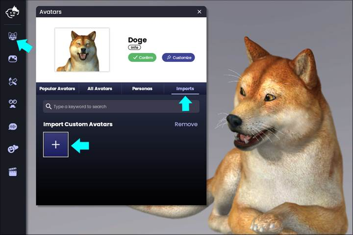
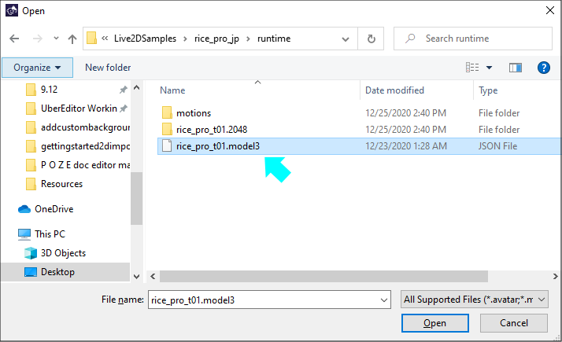
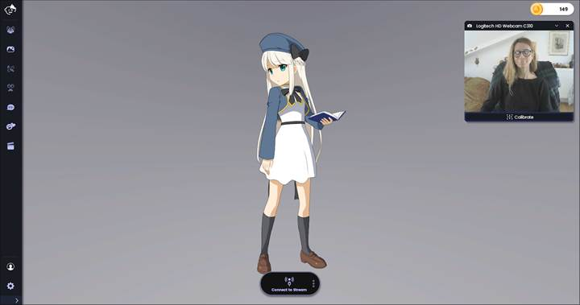

Import Your Live2D Models in Animaze PC
The simplest way to import any Live2D model (including one you used with FaceRig) into Animaze is through Animaze’s built in Import Custom Avatars feature.
1. Simply open Animaze, click on the Avatar icon in the left menu bar, and click on the box under Import Custom Avatars:

2. When the file browser opens, navigate to your Live2D model’s folder, select your avatar’s ‘model3.json’ file and click Open.

3. Your avatar will appear in Animaze!

Test Your Avatar...
Now that you’ve imported your avatar, you are free to use it in Animaze as you see fit! In most cases, Animaze will automatically import your model’s motion parameters, special actions, and special poses.
Make sure to test your avatar and ensure it is working as expected. If it does, you are all set, and don’t need to take anymore action.
Congratulations on importing your Live2D Model to Animaze!
If You Need to Fix Your Avatar...
If your avatar isn’t behaving as expected, you’ll need to import the avatar into the Animaze Editor and try a few simple fixes. In the Animaze Editor, you can fix two common issues with Live2D avatars: blurry/low-res avatars, and certain face/body parts not responding to tracking input.
[Link to Debugging Your Live2D Avatar]